기존 앱의 데이터 나열 중심 디자인에서 사용자 중심으로 리뉴얼했습니다. 수치와 표를 그대로 보여 주던 화면을 위치·행동 안내·지도 경로와 함께 전달하도록 바꿔, 사용자가 자신의 상황을 바로 이해하고 행동할 수 있게 했습니다.
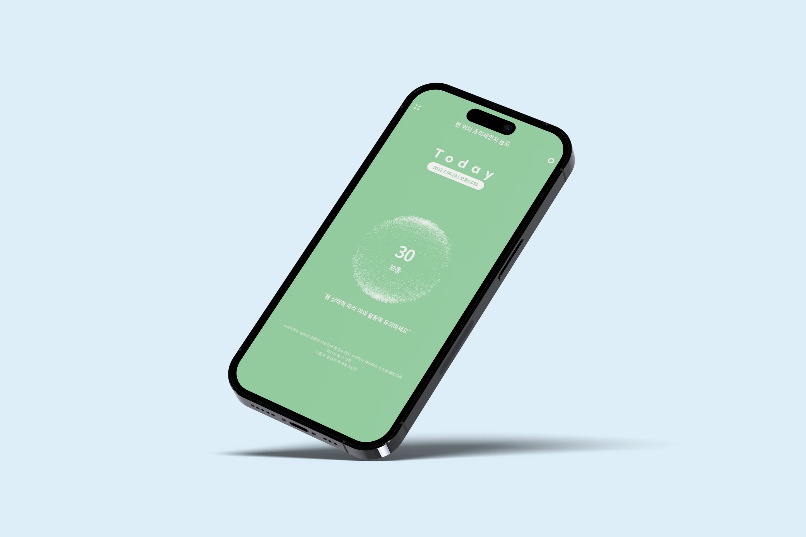
01 · Color
Blue Sky
브랜드 컬러는 가장 좋은 공기 단계와 같은 하늘색입니다. 앱을 열었을 때의 첫인상이 곧 ‘좋음’이 되도록 했고, 나머지 단계는 채도를 맞춘 초록 · 노랑 · 코랄로 이어집니다.
Brand
Air Quality Scale 막대를 움직여 보세요
좋음
Neutral & System
02 · Typography
Gmarket Sans
농도 수치가 화면의 주인공이기 때문에, 숫자의 형태가 단단한 Gmarket Sans 한 가지로 통일했습니다. 굵기는 Light 300 · Medium 500 · Bold 700 세 가지만 씁니다.
오늘의 공기 17 ㎍/㎥
오늘의 공기 17 ㎍/㎥
오늘의 공기 17 ㎍/㎥
03 · Layout
Design Guide
기준 화면은 375 × 812. 위로는 상태 표시줄 44, 아래로는 탭바 76 을 비워 두고, 좌우 여백은 24 로 맞췄습니다. 모서리는 쓰임에 따라 8단계로 나눴습니다.
Radius
Shadow
04 · Components
Element
아래 부품은 그림이 아니라 앱과 같은 CSS 로 그린 실제 요소입니다. 셀렉트와 캘린더는 눌러서 써 볼 수 있습니다.
Button
- 높이를 고정하고(46 · 44 · 40) 글자는 flex 로 정가운데에 둡니다. line-height 로 높이를 맞추지 않습니다.
- Disabled 는 .stanby — 필수 입력이 모두 차면 :has() 규칙이 자동으로 풀어 줍니다.
- 한 화면의 주 버튼은 하나. 보조 동작은 Line, 문구는 ‘다음 · 확인 · 완료’처럼 짧은 동사로.
Input
- 모서리 5, 테두리 --border-field. Focus 에서 primary 테두리 + focus ring.
- 알약형은 로그인 입력칸과 지도 검색칸에만 씁니다.
- 날짜는 숫자만 입력해도 점(.)이 자동으로 들어갑니다.
Agreement
- 약관 동의만 보라(--color-purple), 선택 목록은 브랜드 컬러.
- 줄 전체가 label 이라 어디를 눌러도 체크됩니다.
- 필수 사각 체크(.input-check-square)는 숨기지 않고 투명하게 겹쳐 둡니다. 체크하지 않고 보내면 브라우저 안내가 뜨고, 키보드로도 체크할 수 있습니다.
Popup
회원님 아이디 testID
데이터를 보내시겠습니까?
*데이터를 한번 보내시면
수정하실 수 없습니다.
- 결과 팝업은 버튼 하나(확인 → 로그인). 강조할 값만 <b> 로 감싸면 primary 색이 됩니다.
- 확인 팝업은 취소 / 확인 두 버튼(.popup-buttons). form 에 data-confirm 을 달면 js/confirm.js 가 제출을 막고 띄웁니다.
- 되돌릴 수 없는 동작에만 빨간 보조 문구(.form-text.red)를 붙입니다. 수정하기는 “수정하시겠습니까?” 만.
Steps
1 / 5 · 기본 정보
- 지름 40 원 + 마스크 아이콘. 현재 단계만 primary 로 채웁니다.
- 현재 단계에는 aria-current="step" 을 함께 붙입니다.
Tab Bar
- 탭은 네 개로 고정: 홈 · 위치 데이터 · 히트맵 · 환경설정. 아이콘과 이름을 항상 함께 둡니다.
- 선택된 탭은 .on 과 -on.svg 아이콘. 눌러서 바꿔 볼 수 있습니다.
Graph
오늘의 노출 시간
단계별 머문 시간 비율
시간대별 초미세먼지
일 평균 31㎍/㎥
- 색은 단계 토큰(--color-good · normal · bad · verybad)만 씁니다. 그래프만을 위한 새 색은 만들지 않습니다.
- 도넛은 하루 24시간을 단계별로 나눈 비율, 막대는 시간대별 농도입니다. 막대에 마우스를 올리면 시간 · 수치 · 단계가 뜹니다.
- 막대는 가로로 스크롤되고 세로축(0 · 25 · 50 · 75 · 100)은 고정됩니다. 화면에 들어올 때 한 번만 자라납니다.
05 · Flow Chart
Flow Design
가입 8단계와 매일 쓰는 네 개의 탭을 한 장에 그렸습니다. 이번 리뉴얼에서 바뀐 곳은 점으로 표시했고, 상자에 마우스를 올리면 이어진 경로만 진하게 보입니다.
Index
- 핵심 기능
- 검토 필요
- 수정 · 추가 사항
Node
- 화면 · 선택
- 입력
- 판단
- 하단 탭
- 화면 속 정보
User_DB
Air_DB
상자에 마우스를 올리면 이어진 경로가 강조됩니다.Tracker · Flow v2.0
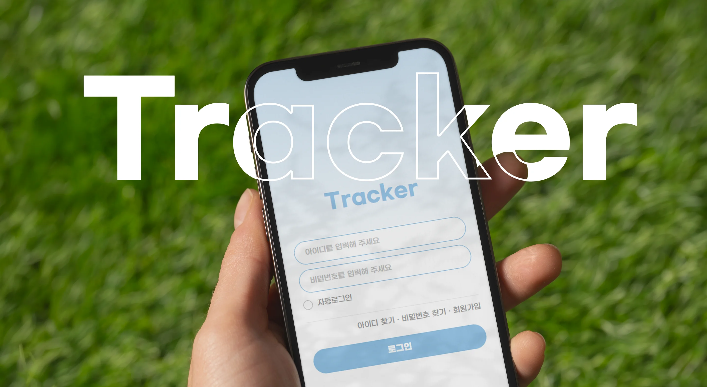
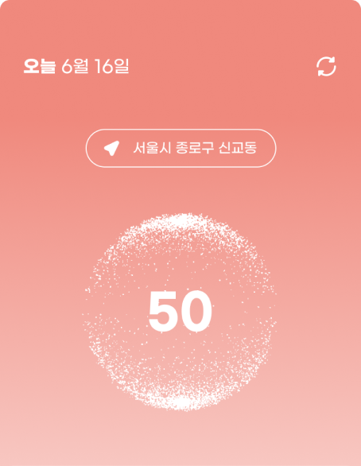
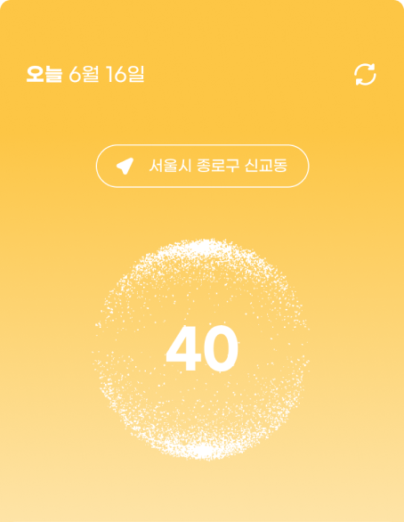
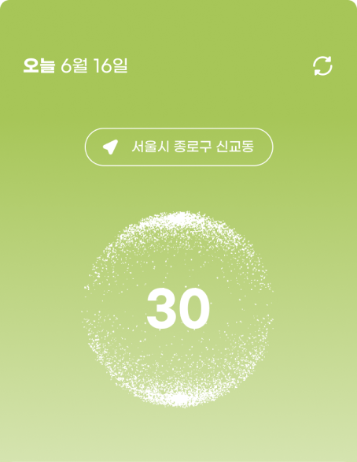
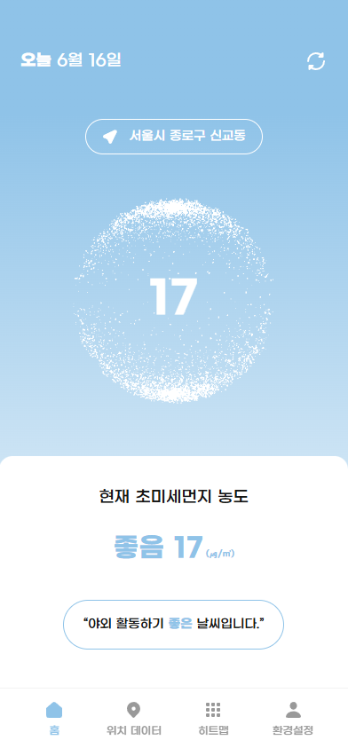
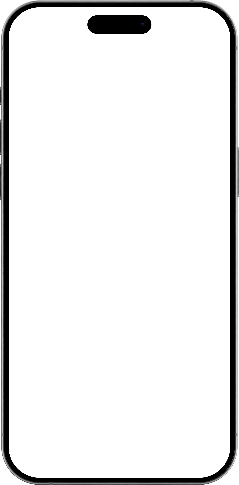
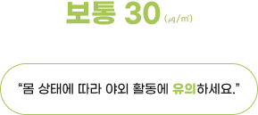
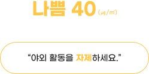
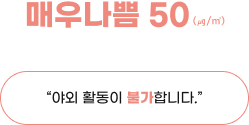
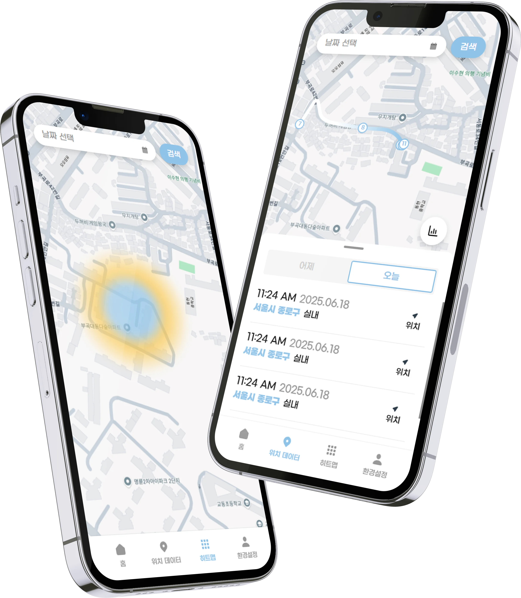
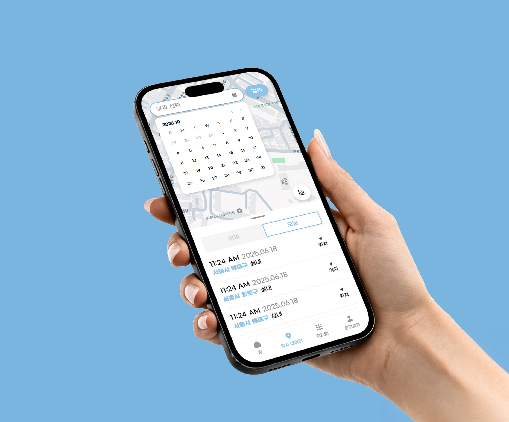
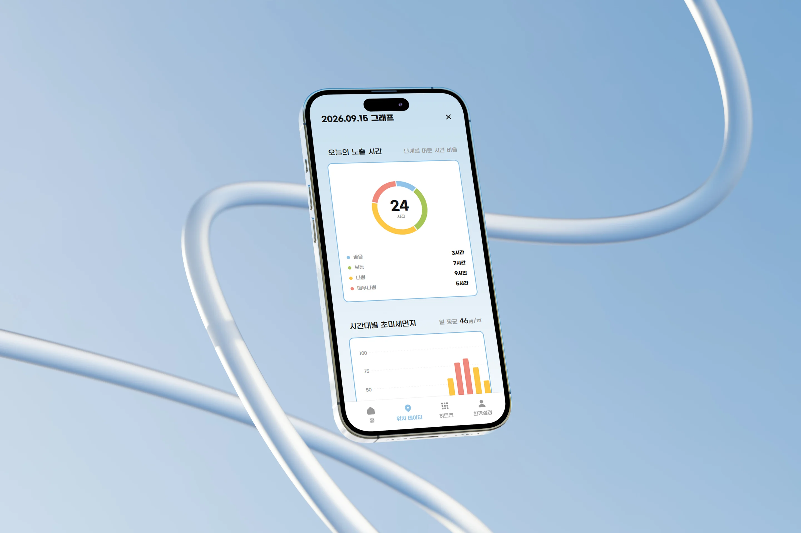
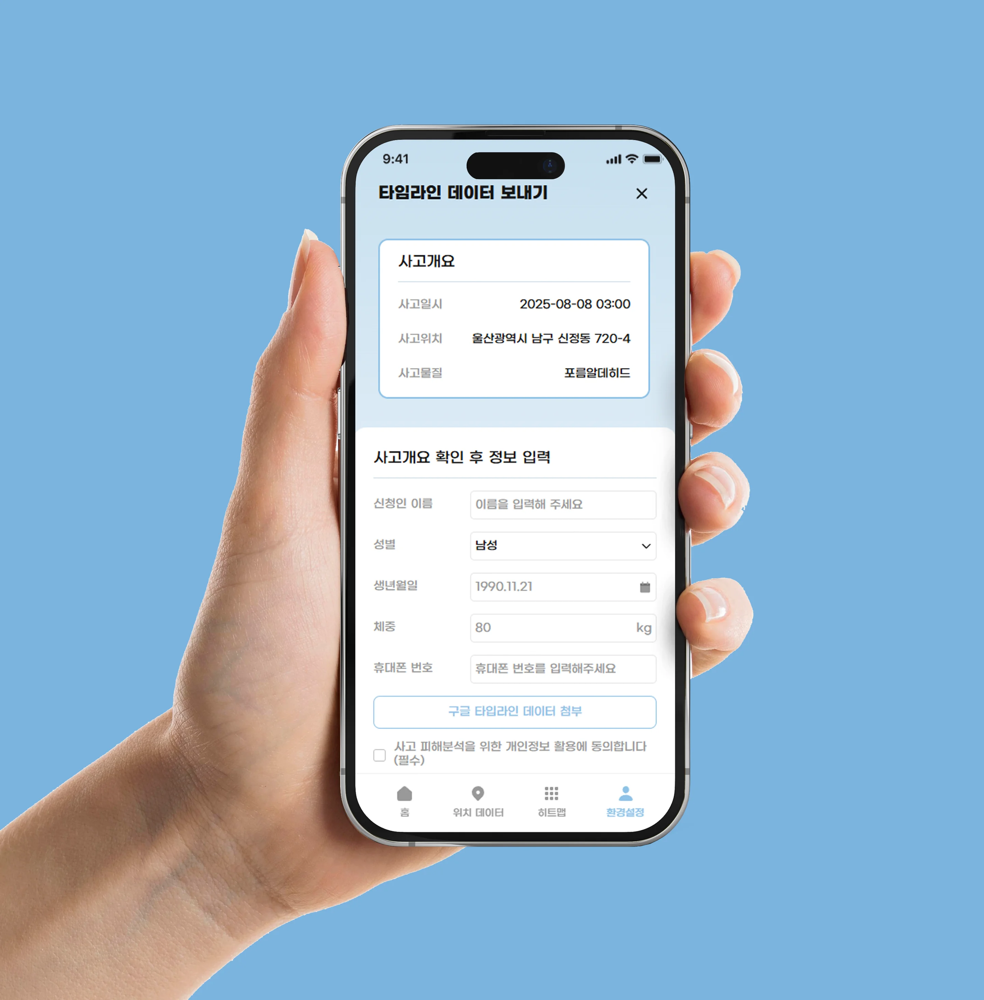
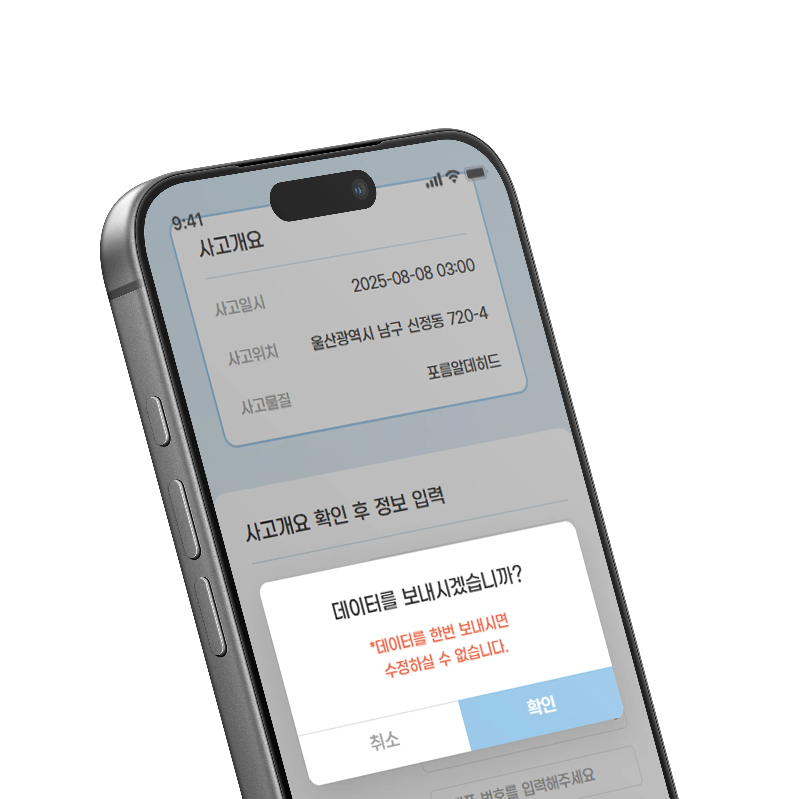